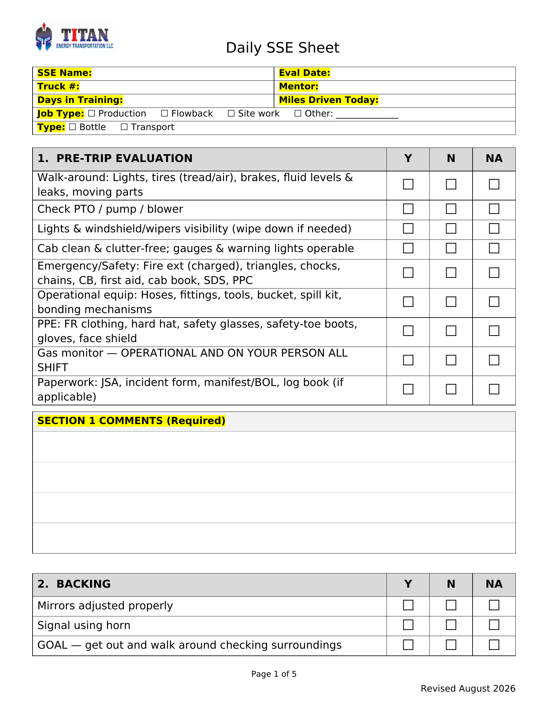
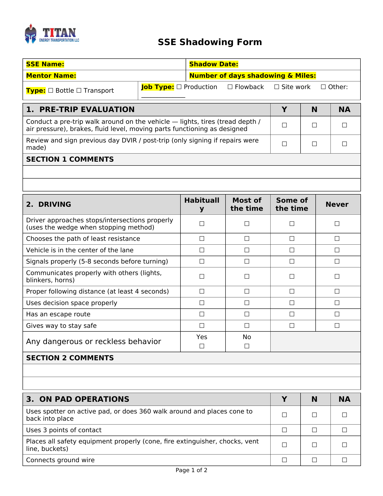
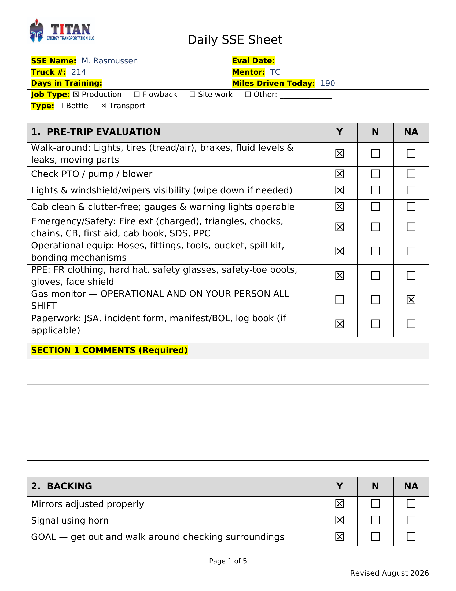
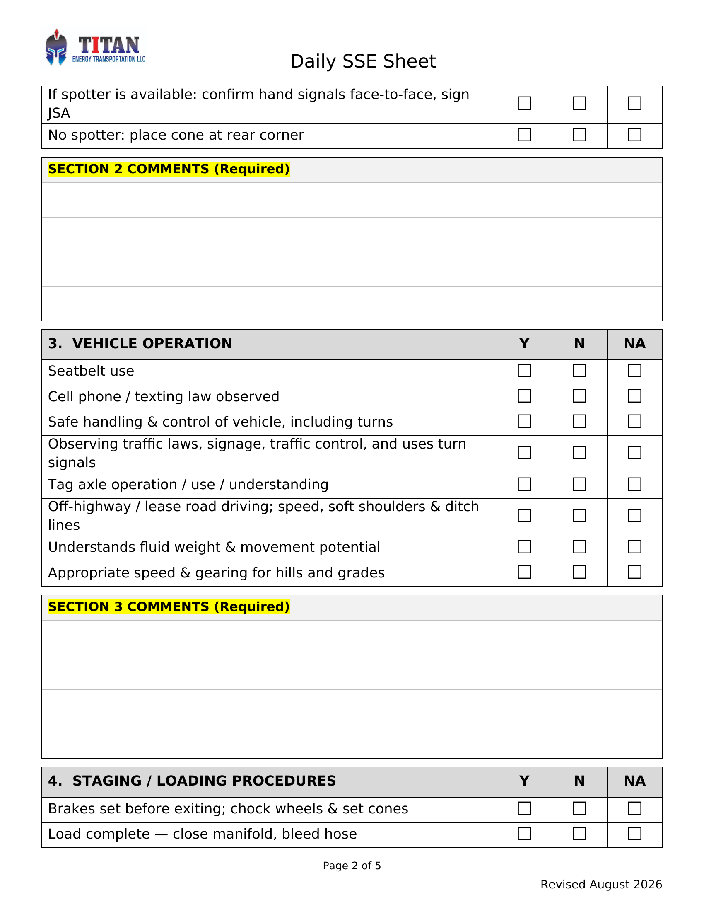
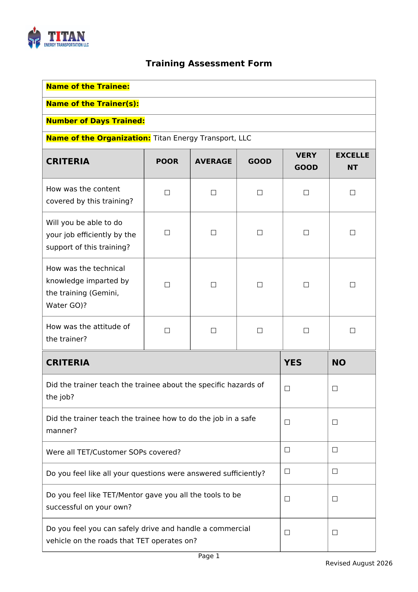
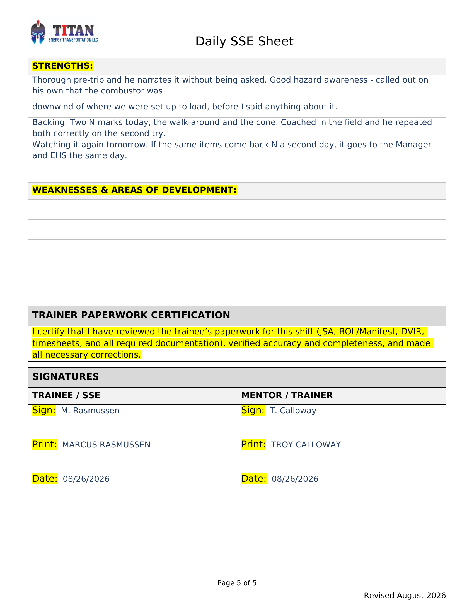
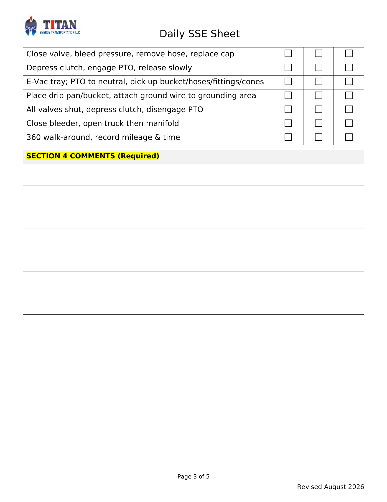
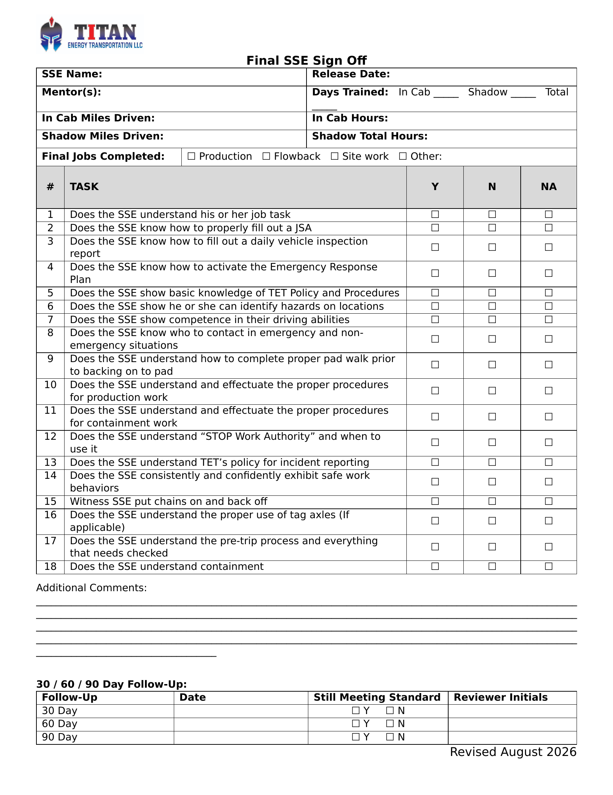

Seven carry video; Module 8 is the written scenario exam. Total running time is 37 minutes. A candidate completes the program in two sittings.
Fifteen pieces of equipment, what each one holds, and where the ESD and muster area are. Recognition, not operation.

Daily sheet, shadow sheet, trainer assessment, final sign-off - and who owns each one.

Y, N and NA as the manual defines them. Graded hardest, because inconsistent grading is the problem this program exists to fix.

Name it, explain the risk, demonstrate, watch them repeat it. Every N, in the field, on the spot.

What escalates, to whom, and how fast. Reckless behavior does not wait for the end of the shift.

Same day, on the truck, every comment box filled. If EHS cannot find it, it was never verified.

What a Y actually requires, line by line, across the Daily and Shadow sheets.

Mixed scenarios drawing on everything above. The last gate before the live evaluation. Written exam - no video.
